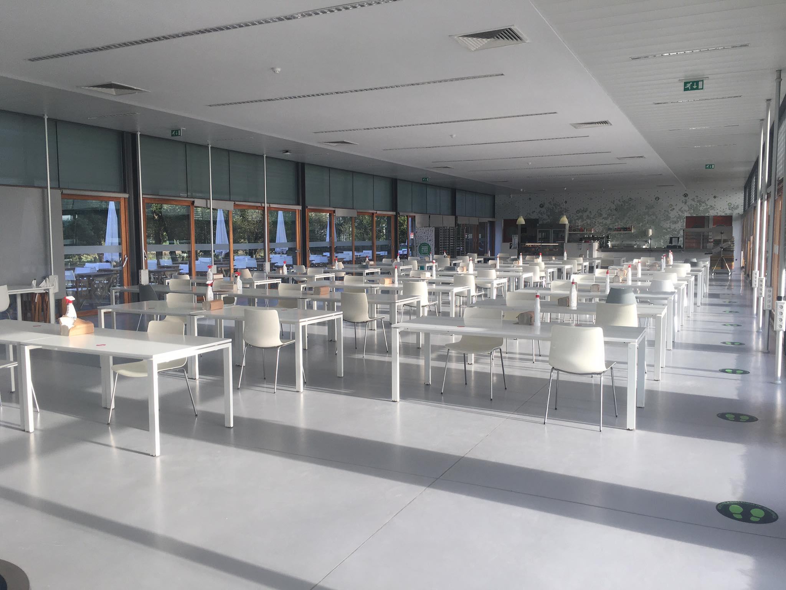
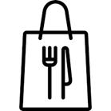

Cantina

A Cantina do Campus do IPCA está em pleno funcionamento, com garantia do cumprimento de todas as regras de segurança previstas para espaços com este objetivo, designadamente quanto à lotação, corredores de circulação e distância física entre as pessoas.
O acesso ao serviço de refeições na Cantina do Campus do IPCA obedece aos seguintes procedimentos:
O acesso ao serviço de refeições na Cantina do Campus do IPCA obedece aos seguintes procedimentos:
Take Away

De forma a minimizar o impacto da redução da capacidade de lugares sentados na Cantina do Campus do IPCA, a partir do dia 24 de setembro o serviço de refeições passará a estar, também, disponível na modalidade de take away, de forma a que os utentes possam adquirir a refeição e consumi-la noutro local.
As refeições take away são colocadas em recipientes próprios para transporte e têm a seguinte composição:
- – sopa;
- – prato (um dos pratos da Cantina);
- – 1 peça de fruta;
- – pão.
AQUISIÇÃO DE REFEIÇÕES TAKE AWAY
A aquisição de refeições take away é realizada na plataforma SASocial, com acesso em https://portal.sas.ipca.pt, sendo que o saldo da conta corrente permite a aquisição das refeições da linha de self e take away.
Todas as funcionalidades da plataforma SASocial para a aquisição das refeições na linha de self aplicam-se às refeição take away, nomeadamente, a visualização dos pratos disponíveis para take away, a anulação de refeições take away adquiridas e o número máximo de refeições (3 refeições).
Sugerimos a leitura do email “Aquisição de refeições na plataforma SASocial a partir de 23 de setembro” para esclarecimentos de como proceder.
Todas as funcionalidades da plataforma SASocial para a aquisição das refeições na linha de self aplicam-se às refeição take away, nomeadamente, a visualização dos pratos disponíveis para take away, a anulação de refeições take away adquiridas e o número máximo de refeições (3 refeições).
Sugerimos a leitura do email “Aquisição de refeições na plataforma SASocial a partir de 23 de setembro” para esclarecimentos de como proceder.
Horário
LEVANTAMENTO DAS REFEIÇÕES TAKE AWAY
As refeições take away são entregues na linha de self, a seguir ao computador, e o circuito é o mesmo das refeições consumidas na Cantina (fila única para refeições self-service e take away) O levantamento das refeições take away obedece ao mesmo horário das refeições da Cantina, a saber:
| Dias úteis | Sábados | |
| Almoço | encerrado | encerrado |
| Jantar | encerrado | encerrado |
ANULAÇÃO DAS REFEIÇÕES TAKE AWAY
A anulação de refeições take away obedece ao seguinte horário (idêntico aos horários das refeições da Cantina):
| Almoço | Jantar | |
| Horário Anulação | até às 10h30 do próprio dia | até às 17h30 do próprio dia |
REFEIÇÕES TAKE AWAY ADQUIRIDAS E NÃO CONSUMIDAS NEM ANULADAS
Não é possível haver devolução de dinheiro nas refeições take away adquiridas por pré-marcação ou adquiridas sem pré-marcação e que não sejam consumidas nem anuladas.
Em período de férias escolares, Natal, Páscoa e verão, de acordo com o calendário escolar, poderá haver alterações de horário.
Nota: Qualquer alteração será comunicada através dos meios de publicitação existentes.
Nota: Qualquer alteração será comunicada através dos meios de publicitação existentes.
Preço
PREÇO DAS REFEIÇÕES TAKE AWAY
As refeições take away têm um acréscimo de 0,80€ para embalagens, face às refeições consumidas na Cantina. Assim, os preços das refeições take away são os seguintes, para pré-marcação e compra “Na hora”, respetivamente:
| Preço | Almoço | Jantar | |
| Pré-marcação
(Reserva e escolha antecipada da refeição entre os pratos disponibilizados na ementa para a modalidade de take away) |
3,30€ | até às 6h59 do próprio dia | até às 11h59 do próprio dia |
| Compra “Na Hora”
(Refeições adquiridas sem pré-marcação) |
4,55€ | entre as 7h00 e as 14h30 do próprio dia | entre as 12h00 e as 21h00 do próprio dia |
O carregamento do plafond deverá ser sempre feito no Bar da Cantina.
REFEIÇÕES TAKE AWAY ADQUIRIDAS E NÃO CONSUMIDAS NEM ANULADAS
Não é possível haver devolução de dinheiro nas refeições take away adquiridas por pré-marcação ou adquiridas sem pré-marcação e que não sejam consumidas nem anuladas.
Para esclarecimentos adicionais, por favor, contacte os SASIPCA:
- > Email: sas@ipca.pt
- > Telefone: 253 802 503